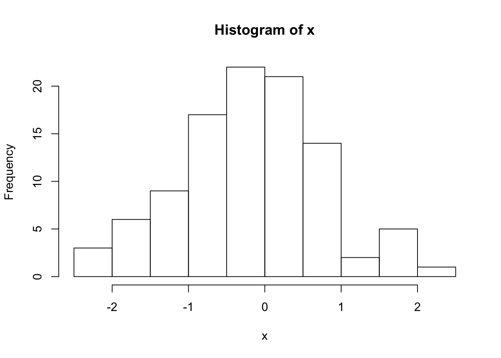
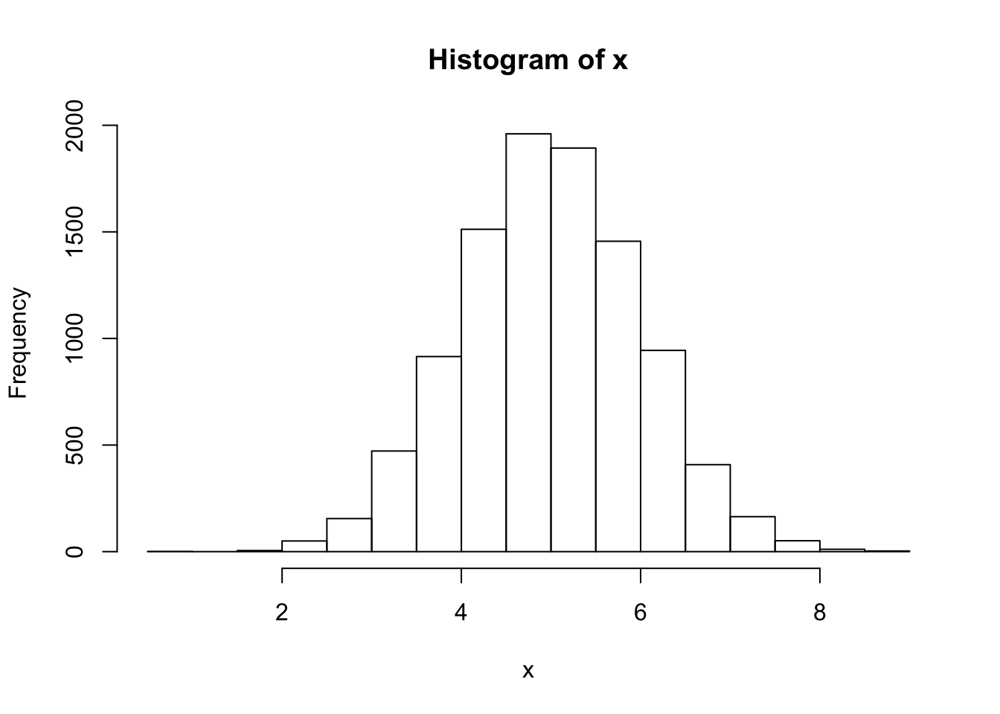

knitr::opts_chunk$set(echo = TRUE)
library(tidyverse)
set.seed(181818)A random sequence of H’s and T’s is generated by tossing a fair coin \(n = 20\) times. What’s the expected length of the longest run of consecutive heads or tails?
Taken from Tijms, Henk. Probability: A Lively Introduction. Cambridge University Press, 2017.
Two comments:
Make sure you preview your .md documents on github. A well formatted document will make it easy to identify your answers (as opposed to the questions).
Citations: I don’t care which style you use (MLA, APA, etc) but it must include title, authors, year, journal, issue etc. Easiest way to get one is look for a link on the article page for Export Citation.
Out of 30 submissions, 7 unique articles that had some substantial computation, in three broad categories:
Articles providing enough links to code and data to reproduce the analysis were rare.
Proposals will be due as part of homework #3. (More details on what a proposal looks like then).
Start thinking about what you’d like to work on.
It probably will fit into one of the three categories above, or additionally you might aim to implement a statistical algorithm of interest.
It should stretch your current abilities.
I would expect over the quarter you put in ~ 40 hours. (planning, implementation (coding), making the implementation nice, documentation, communication).
I’m here to help, with some indication of your interests.
rerun())map(), map_dbl())# depends on goal)A random sequence of H’s and T’s is generated by tossing a fair coin \(n = 20\) times. What’s the expected length of the longest run of consecutive heads or tails?
Taken from Tijms, Henk. Probability: A Lively Introduction. Cambridge University Press, 2017.
# A single simulated example 1 = H, 0 = T
one_sequence <- rbinom(20, size = 1, prob = 0.5)# Longest run?
max(rle(one_sequence)$lengths)## [1] 5All together…
num_sims <- 1000
many_sequences <- rerun(num_sims,
rbinom(20, size = 1, prob = 0.5))
longest_runs <- map_dbl(many_sequences,
~ max(rle(.)$lengths))
# Finally...
mean(longest_runs)## [1] 4.639Solve 1. and 2. by writing functions, 3. with further iteration.
(4 min)
What are the three key steps to writing a function? Assuming you already have a working snippet of code
Turning the following snippet into a function:
x <- 1:10
# sd_over_mean
# ratio_function
# cv
# a minimal version
coefficient_of_variation <- function(x){
sd(x, na.rm = TRUE) / mean(x, na.rm = TRUE)
}
# our final version
coefficient_of_variation <- function(x, na.rm = FALSE, ...){
sd(x, na.rm = na.rm) / mean(x, na.rm = na.rm, ...)
}
x <- runif(10)
coefficient_of_variation(x = x)## [1] 0.4623089coefficient_of_variation(x = x, trim = 0.25)## [1] 0.4564815From last week: to generate a sample from Exp(\(\lambda\))
u <- runif(1)
lambda <- 5
(x <- -1 / lambda * log(1 - u))## [1] 0.1018719Your turn Turn this into a function. What should the arguments be?
u <- runif(1)
lambda <- 5
(x <- -1 / lambda * log(1 - u))## [1] 0.02019427sample_exp <- function(n, lambda){
u <- runif(n)
-1 / lambda * log(1 - u)
}
sample_exp(10, lambda = 5)## [1] 0.1519967204 0.1512896536 0.0042851299 0.1562532665 0.2497672581
## [6] 0.1366965437 0.2555457133 0.0002328799 0.1706922360 0.0479803846Back at 9:03
What if we wanted this to work for any inverse CDF function?
exp_icdf <- function(u, lambda) {-1 / lambda * log(1 - u)}
u <- runif(1)
exp_icdf(u, lambda = 5)## [1] 0.1628068sample_inverse_cdf <- function(n, inv_cdf, ...){
u <- runif(n)
inv_cdf(u, ...)
}
sample_inverse_cdf(20, exp_icdf, lambda = 5)## [1] 0.053899622 0.025974188 0.165090472 0.711054570 0.313451911
## [6] 0.257789633 0.103208275 0.184061036 0.175007737 1.020635893
## [11] 0.122751554 0.280594812 0.412539486 0.016316951 0.012855245
## [16] 0.046939276 0.071643537 0.157593954 0.007222465 0.207302211Your Turn Try it to simulate 100 values from a Normal(0, 1). Hint: you can use the built-in inverse CDF function qnorm().
qnorm(0.5) # can use the built in quantile function ## [1] 0x <- sample_inverse_cdf(100, qnorm)
hist(x) # Looks good
# The `...` allow us to pass in other parameters to our inverse
# CDF function
x <- sample_inverse_cdf(10000, qnorm, mean = 5)
hist(x) # Now centered at 5
(Pick up here on Thursday)
First a little notation…
\(\pmb{X}\) is a random variable (possibly vector valued) with some cdf \(F_X\)
In Monte Carlo simulation, we often want to estimate \[ \theta = \text{E}\left( h(\pmb{X})\right) \]
We do this by:
Sampling \(\pmb{X}_1, \ldots, \pmb{X}_n\) i.i.d from distribution \(F_X\).
Calculating \(h(\pmb{X}_1), \ldots, h(\pmb{X}_n)\).
Finding the sample mean of the \(h(\pmb{X}_i)\), i.e. \[ \hat{\theta} = \frac{1}{n}\sum_{i = 1}^n h(\pmb{X}_i) \]
This mirrors exactly our current approach:
samples <- rerun(n, ~ sampling_function(.))calculated_values <- map_dbl(samples, ~ calulating_function(.))mean(calculated_values)The WLLN (Weak Law of Large Numbers) provides us a guarantee this will work.
How accurately do we want to estimate \(\theta\)?
Your Turn Can you get a confidence interval on the estimate of the expected length of the longest run from our earlier example?
theta_hat <- mean(longest_runs)
# 95%
theta_hat + c(-1, 1) * 1.96 * (sd(longest_runs)/sqrt(num_sims))## [1] 4.542639 4.735361Let \(Y = h(X)\), \(\mu = E(Y)\) and \(\overline{Y} = \sum_{i = 1}^n h(X_i)\).
Then \[ \text{Var}(\hat{\theta}) = \text{Var}(\overline{Y}) \dot \sim \, N\left(\mu, \frac{\text{Var}(Y)}{n}\right) \] for large \(n\) by the Central Limit Theorem.
We don’t know \(\text{Var}(Y)\), but we can estimate it using our simulated \(Y_i\).
Leads to the usual 95% CI formula: \[ \overline{Y} \pm 1.96 \frac{s}{\sqrt{n}} \] where \(s\) is the sample standard deviation of the \(Y_i\), and \(n\) the number of simulations.
New question: What’s the probability of a run greater than 10?
Want to know: \[ p = \text{P}(h(\pmb{X}) = 1) \] where \[ h(\pmb{X}) = \begin{cases} 1, \, \text{when longest run in sequence } \pmb{X} \text{ is greater than 10}, \\ 0, \, \text{otherwise} \end{cases} \] same as asking for \(p =\theta = \text{E}\left( h(\pmb{X})\right)\).
We already have enough to get this new function of our samples:
longest_runs > 10Estimate \(\theta\) with:
p_hat <- mean(longest_runs > 10)What’s \(Var(\hat{\theta})\) in this setting?
Use result from Bernoulli random variables \[ Var(\hat{p}) = p(1 - p) \]
Leads to a CI based only on the estimated probability:
p_hat + c(-1, 1) * 1.96 * (sqrt(p_hat*(1-p_hat))/sqrt(num_sims))## [1] 0.0006282772 0.0093717228The mean approach still works, but will give slightly different values:
p_hat + c(-1, 1) * 1.96 * (sd(longest_runs > 10)/sqrt(num_sims))## [1] 0.0006260897 0.0093739103Simulating in clever ways to reduce the variance of the estimate, \(\text{Var}(\hat{\theta})\).